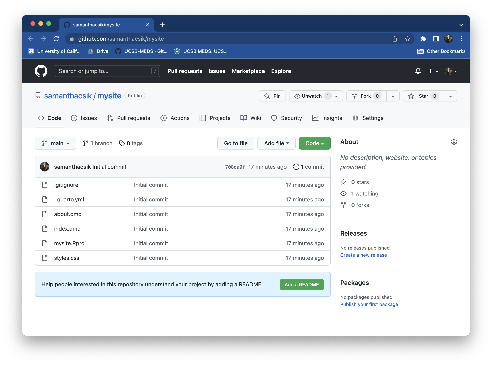
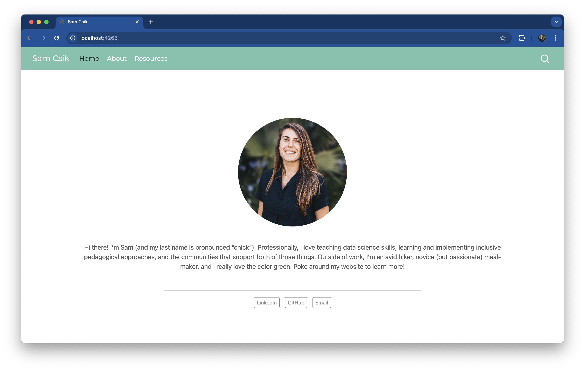
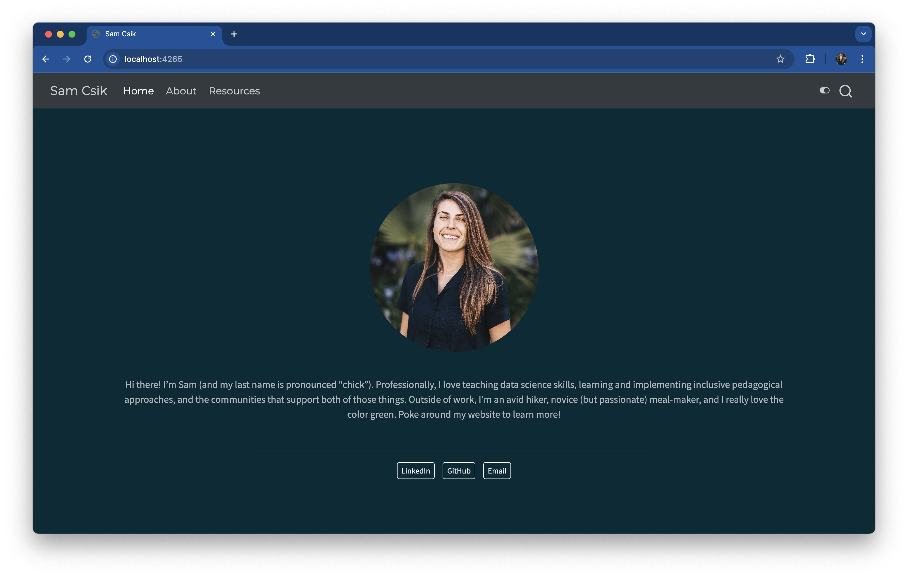

Creating your personal website using Quarto
This document was originally developed as teaching material for UCSB’s Master of Environmental Data Science (MEDS) program.
What is Quarto?
Quarto is a publishing system built on Pandoc that allows users to create dynamic content using R, Python, Julia, and ObservableJS (with plans to add more languages too!).
R users have long loved RMarkdown for combining prose, code, and outputs into single “knitted” documents. Quarto extends all of RMarkdown’s best features (plus many more!) to additional languages.
A side-by-side comparison of
.rmd vs. .qmd files
If you’re already an avid RMarkdown user, great news! RMarkdown (.rmd) and Quarto Markdown (.qmd) files look super similar:
- document-level metadata and configurations are included in the document’s YAML (denoted by the
---gates at the top of the document) - code is written inside executable code chunks
- prose is written in the body of the document
There are some slight differences to be aware of:
- some YAML option names differ between the two document types (e.g.
outputin.rmdvs.formatin.qmd) - chunk-level execution options are are written within with code block braces (e.g. ```
{r echo=FALSE}) in.rmdfiles, and written below code block braces following hash pipes,|#(e.g.|# echo: false) in.qmdfiles - booleans are capitalized in YAML and chunk-level metadata in
.rmdfiles (e.g.FALSE) and lowercase in.qmdfiles (e.g.false) - you Knit
.rmdfiles and Render.qmdfiles to convert your work to your desired output type (e.g..html)
They also look pretty similar when knitted/rendered. Below is a side-by-side comparison of a knitted .rmd file and a rendered .qmd file (both as .html files):


Art by Allison Horst. Be sure to check out the rest of Allison’s seriously cute Quarto penguin art in the #rstudioconf2022 keynote talk, Hello Quarto, by Julie Lowndes & Mine Çetinkaya-Rundel!
You can explore Quarto’s documentation to learn more about creating documents, websites, blogs, books, slides, etc.
Do I need to use Quarto to build my website?
Nope! There are a number of R-based tools that make building websites and blogs fun and easy, including the still-widely-used {blogdown} and {distill} packages.

Alternatively, you can skip R altogether and build really beautiful sites using HTML templates (check out this tutorial by NCEAS’ Science Communication and Policy Officer, Alex Phillips) or a variety of static site generators (e.g. Hugo, Jekyll).
Though still relatively new, Quarto has the data science community abuzz – it’s versatile, user-friendly, and looks pretty great out-of-the-box (while still being customizable).
Create the scaffolding for your website
Before getting started…
To follow along, you’ll need:
- R & RStudio installed (find the latest RStudio release here)
- Quarto installed – Quarto is now included with RStudio v2022.07.1+ i.e. no need for a separate download/install if you have the latest version of RStudio
- Git installed/configured
- A GitHub account & your personal access token (PAT) stored
Please refer to the MEDS Installation Guide for Mac and Windows machines to find detailed instructions on getting setup (follow steps 1-7).
This document reviews two ways to get started with using Quarto to build your website.
- Through the command line
- Using the RStudio IDE
The order of operations is slightly different depending on which approach you decide to take, but the concepts remain the same.
Why use the command line to set up your Quarto website?
You’ll start to get more comfortable working in a command line interface (CLI)
You’re able to interact with Quarto via the command line regardless of which language (R, Python, Julia, ObservableJS) or IDE (Integrated Development Environment) you might find yourself working with
Steps:
Open up your command line interface (often Terminal on Macs or Git Bash on Windows)
Navigate to the location on your computer where you’d like your project to live. Determine where you are in your file system using
pwd(print working directory). Usecd(change directory) to navigate your file system to wherever you’d like your project to live.
Organizing R projects / git repositories
There are lots of differing opinions on how to keep your R projects/git repositories organized on your computer. I personally save all of mine to a folder called git in my computer’s home directory (e.g. Users/samanthacsik/git/) so everything is in one place.
- Create the scaffolding (i.e. folder structure & necessary files) for your website by running the following in the command line (substitute
mysitewith whatever name you want to give your repo):
Data science jargon: Directory == Folder
Throughout this document, we’ll use the words directory and folder interchangeably.
quarto create-project mysite --type website
Name your project username.github.io if you plan to deploy using GitHub pages
Because we’ll be using GitHub pages to publish/host our websites, it’s recommended that you name your project username.github.io (you’re allowed one user website with the github.io suffix) – for example, the project/GitHub repository, which contains the code for my personal website, is named samanthacsik.github.io. Otherwise, name it something reasonable (this will become the slug for your site if publishing with GitHub pages, so choose carefully). I’m calling my project mysite just for tutorial purposes only – you should definitely give yours a more practical/creative name.

pwd to see your current working directory. Use cd to change directories.
quarto create-project your_project_name --type website commands.- If you
cdinto your newmysitedirectory, and use thelscommand to list out all the contents of that directory, you should see a series of files (_quarto.yml,about.qmd,index.qmd,styles.css) that provide the scaffolding for your website. For example:
# print current working directory
(base) Samanthas-MacBook-Air:git samanthacsik$ pwd
/Users/samanthacsik/git
# move into `mysite` directory
(base) Samanthas-MacBook-Air:git samanthacsik$ cd mysite/
(base) Samanthas-MacBook-Air:mysite samanthacsik$
# list out all files in the `mysite` directory
(base) Samanthas-MacBook-Air:mysite samanthacsik$ ls
_quarto.yml _site about.qmd index.qmd styles.css- Alternatively, you can use Finder (Mac) or Windows Explorer (Windows) to view your new directory and files.

- Preview your very basic, but functional website straight from the command line by typing (you’ll need to navigate to your project directory (e.g
mysite/):
quarto preview- Your site preview should open up in your browser. Quit your preview by pressing
control+C
Preview your website from different locations using file paths
You will need to supply the path to your website directory when previewing from a different location. For example, if my Quarto website directory is at User/samanthacsik/git/mysite, but I am one directory above in User/samanthacsik/git, I can run quarto preview mysite. Alternatively I could provide the full path quarto preview User/samanthacsik/git/mysite or relative path quarto preview ~/git/mysite, no matter which directory I’m currently in.
- Initialize your project as a git repository. At this point you’ve created a directory (folder) containing some important website scaffolding files, but they’re not yet being tracked by Git. First be sure to
cdinto your website folder. Then, initialize this folder as a git repository using thegit initcommand in the terminal window.
git init
What is a git repository?
When we initialize our R project, mysite/ (or username.github.io/), as a git repository using git init, a hidden .git/ folder is created within that project folder. This hidden .git/ folder is the git repository. As you use git commands (or RStudio’s GUI buttons) to capture versions or “snapshots” of your work, those versions (and their associated metadata) get stored within the .git/ folder. This allows you to access and/or recover any previous versions of your work. If you delete .git/, you delete your project’s history. Here is an example website repository, represented visually:

- Check the name of your default branch – that is, the branch that all changes eventually get merged back into (if you’re building a website, this branch is typically the one you’ll want to deploy). Run
git statusin the command line to identify the name of your default branch (this should be the only branch you have at the moment). Runninggit statuswill return something that looks like this, where the first line tells you which branch you’re currently on:
(base) Samanthas-MacBook-Air:mysite samanthacsik$ git status
On branch master
No commits yet
Untracked files:
(use "git add <file>..." to include in what will be committed)
.quarto/
_quarto.yml
_site/
about.qmd
index.qmd
styles.css
nothing added to commit but untracked files present (use "git add" to track)git status provides lots of helpful information about the current state of your your working directory and staging area
I use this command often when working on the command line to double check that I’m actually where I think I am, and to see tracked files and untracked or changed files. It’s a good habit to run git status after switching branches or before/after adding files to commit.
- If your default branch is named
master, update the name tomain. If your default branch (you should only have one branch so far, the default branch) is already namedmain, you can head straight to step 8. Otherwise, choose your workflow below based on your Git version (check your version by runninggit --versionin the command line):
You can update the default branch to main by running the following line in the command line:
git config --global init.defaultBranch mainThis sets the default branch name to main for any new repositories you create moving forward (it does not rename branches in existing projects).
You can double check that this worked by typing out the git status command again. The first printed line should now read, On branch main.
Rename the default branch as main by running the following line in the command line:
git branch -m master mainThe -m attribute is used to rename the branch without affecting the branch’s history.
This sets the default branch name to main ONLY for this repository (so you’ll need to do this with any new local git repositories that you create.
You can double check that this worked by typing out the git status command again. The first printed line should now read, On branch main.
Why are we doing this?
The racist “master” terminology for git branches motivates us to update our default branch to “main” instead.
There is a push across platforms and software to update this historical default branch name from master to main. GitHub has already done so – creating a remote repository first results in a default branch named main. Depending on your version of Git and/or your configuration settings, however, you may need to set update the name manually when creating a local git repository first (as we’re doing here).
- Stage/add all of your website’s scaffolding files (analogous to checking the boxes next to your files in RStudio’s Git tab)…
# this adds all untracked or changed files at once
git add .
# alternatively, you can add files individually
git add <file_name>
Tip
Use the git status command again to see if your files have been successfully added before committing them – any untracked or changed files that were once printed in red should now appear in green.
…and commit them (analogous to pressing the “Commit” button in RStudio and typing your commit message into the dialog box that appears):
git commit -m "initial commit"- Create an empty remote repository on GitHub. At this point, we’ve created a local git repository that contains the basic files needed to build our Quarto website. Now, we need to create a “remote” repository (i.e. a version of your project that is hosted on the internet) on GitHub. There are multiple ways to do this, but we’ll cover the workflow that makes most intuitive sense to me. Login to GitHub, create a new repository, and give it the same name as your local repository/R Project (e.g.
username.github.io).
Do not initialize your remote repository (on GitHub) with a
README.md, license, or .gitignore file!
Doing so now can lead to merge conflicts. We can add them after our local and remote repositories have been connected.
Understanding the difference between Git vs. Github
Git is a version control software designed to manage the versioning and tracking of source code files and project history. It operates locally on your computer, allowing you to create repositories and track changes. It works directly with files on your computer, and is primarily used through a command line interface (e.g. Terminal, Git Bash). Some GUIs (Graphical User Interfaces), like RStudio, provide user-friendly buttons to execute git commands as well.
GitHub is a cloud-based hosting service that allows you to manage Git repositories – as Jenny Bryan describes in her book Happy Git and GitHub for the useR, hosting services like GitHub “provide a home for your Git-based projects on the internet.” GitHub provides us with the tools for storing, managing, and collaborating on git repositories. It also offers additional features on top of Git, like issue tracking, project management tools, code review, pull requests, and more.
The illustration below depicts how we use Git and GitHub together to version control our work locally (e.g. on our computer(s)), and send versions to and receive updates from a remote (i.e. GitHub) repository.

- Connect your remote (GitHub) repository to your local git repository. Your empty GitHub repo conveniently includes instructions for doing so. Copy the code under “push an existing repository from the command line” to your clipboard, paste into the command line, and run.
The code that GitHub provides (as shown above) should look something like this:
git remote add origin https://github.com/yourUserName/yourRepoName.git
git branch -M main
git push -u origin mainIt does three things:
- Adds the GitHub repository as the remote repository (i.e. connects your local repo to the remote repo)
- Renames the default branch to
main(if you didn’t complete step 7, this will take care of it for you!) - Pushes the
mainbranch to the remote GitHub repository
You should see something similar to this print out, if successful!
(base) Samanthas-Air:mysite samanthacsik$ git remote add origin https://github.com/samanthacsik/mysite.git
(base) Samanthas-Air:mysite samanthacsik$ git branch -M main
(base) Samanthas-Air:mysite samanthacsik$ git push -u origin main
Enumerating objects: 42, done.
Counting objects: 100% (42/42), done.
Delta compression using up to 8 threads
Compressing objects: 100% (35/35), done.
Writing objects: 100% (42/42), 311.78 KiB | 15.59 MiB/s, done.
Total 42 (delta 2), reused 0 (delta 0), pack-reused 0
remote: Resolving deltas: 100% (2/2), done.
To https://github.com/samanthacsik/mysite.git
* [new branch] main -> main
Branch 'main' set up to track remote branch 'main' from 'origin'.
(base) Samanthas-Air:mysite samanthacsik$ - Refresh your GitHub repository (in your web browser) to see that your updates have been successfully pushed!

- (Optional) Add
.gitignore,LICENSE,README.mdfiles, which we chose not to initialize our remote repository with. Thetouchcommand can be used to create any file type that we want (just make sure you’re in the desired location – typically, you want to create these in your project’s root directory). For example:
touch .gitignore
Create a Quarto website inside an existing GitHub repository
The above instructions follow the “create local R project (and initialize as a git repo) first > create upstream remote repo (on GitHub) second” workflow. However, if you already have a remote GitHub repository that you want to use for your website, clone the GitHub repo, then run the following command in the command line:
quarto create-project --type websiteThis adds the the default files (_quarto.yml, .gitignore, index.qmd, about.qmd, styles.css) for getting started on your website.
You may also use this approach if you already have an existing local directory of documents or R project that you’d like to use as the directory for your website. First, navigate to that directory/open that R project, then run the above command in the command line.
Why use RStudio to set up your Quarto website?
- It’s super easy to do with the click of just a few buttons! Remember, the commands we type out in our terminal window underlie the buttons we’re clicking on in the RStudio IDE – RStudio simply provides a user-friendly interface for executing those commands.
Steps:
- Create a new R project with some necessary website files. Start by opening up RStudio and clicking on the
 button in the top right corner. Select New Project…
button in the top right corner. Select New Project…

Choose New Directory, then Quarto Website.


Data science jargon: Directory == Folder
Throughout this document, we’ll use the words directory and folder interchangeably.
And finally, fill out the Directory name: field (this is the name of your R project, and eventually, your remote (i.e. GitHub) repo name), and choose where to save your directory to using the Browse button. Click Create Project.
Name your project username.github.io if you plan to deploy using GitHub pages
Because we’ll be using GitHub pages to publish/host our websites, it’s recommended that you name your project username.github.io (you’re allowed one user website with the github.io suffix) – for example, the project/GitHub repository, which contains the code for my personal website, is named samanthacsik.github.io. Otherwise, name it something reasonable (this will become the slug for your site if publishing with GitHub pages, so choose carefully). I’m calling my project mysite just for tutorial purposes only – you should definitely give yours a more practical/creative name.
Organizing R projects / git repositories
There are lots of differing opinions on how to keep your R projects/git repositories organized on your computer. I personally save all of mine to a folder called git in my computer’s home directory (e.g. Users/samanthacsik/git/) so everything is in one place.

- You should now see a folder called
mysite(or whatever you named your Quarto project) with a series of files (_quarto.yml,about.qmd,index.qmd,styles.css) that provide the scaffolding for your website in the Files tab (in the bottom right panel in RStudio, if you haven’t altered the pane layout).
- Install the
{usethis}package, if necessary. At this point you’ve created a directory (folder) with the website scaffolding files, but it’s not yet being tracked by git, nor is it connected to a remote repository on GitHub. We can use the{usethis}package to help us set this up. First, install the{usethis}package if you don’t already have it.
install.packages("usethis"){usethis} is a package that facilitates interactive workflows for R project creation and development
We’re using the {usethis} workflow here because it’s a super useful package to begin learning for project setup. Read more about the tooling this package offers on the usethis documentation.
- Initialize your R Project folder as a git repository using
usethis::use_git(): In the Console, runusethis::use_git()to create a local git repository. Choose yes when asked if it’s okay to commit any uncommitted files. If asked to restart R, choose yes. Once complete, you should see the Git tab appear in your top left pane in RStudio.
What is a git repository?
When we initialize our R project, mysite/ (or username.github.io/), as a git repository using usethis::use_git(), a hidden .git/ folder is created within that project folder. This hidden .git/ folder is the git repository. As you use git commands (or RStudio’s GUI buttons) to capture versions or “snapshots” of your work, those versions (and their associated metadata) get stored within the .git/ folder. This allows you to access and/or recover any previous versions of your work. If you delete .git/, you delete your project’s history. Here is an example website repository, represented visually:
- Create an upstream remote repository (i.e. GitHub repo) using
usethis::use_github(). Runningusethis::use_github()in the Console will open up your web browser to your new remote repository on GitHub. It should automatically have
Then, in the Console, run usethis::use_github() to create an upstream remote repository (i.e. GitHub repo). Your web browser should open up to your new GitHub repository, with the same name as your local git repo/R project.
Understanding the difference between Git vs. Github
Git is a version control software designed to manage the versioning and tracking of source code files and project history. It operates locally on your computer, allowing you to create repositories and track changes. It works directly with files on your computer, and is primarily used through a command line interface (e.g. Terminal, Git Bash). Some GUIs (Graphical User Interfaces), like RStudio, provide user-friendly buttons to execute git commands as well.
GitHub is a cloud-based hosting service that allows you to manage Git repositories – as Jenny Bryan describes in her book Happy Git and GitHub for the useR, hosting services like GitHub “provide a home for your Git-based projects on the internet.” GitHub provides us with the tools for storing, managing, and collaborating on git repositories. It also offers additional features on top of Git, like issue tracking, project management tools, code review, pull requests, and more.
The illustration below depicts how we use Git and GitHub together to version control our work locally (e.g. on our computer(s)), and send versions to and receive updates from a remote (i.e. GitHub) repository.

usethis::use_github() your browser window should open up to your new GitHub repository and look similar to the browser above.Check the name of your default branch (the only branch you should have at the moment) – that is, the branch that all changes eventually get merged back into (if you’re building a website, this branch is typically the one you’ll want to deploy). There are multiple ways to check this – here are two easy options:
Open RStudio’s Terminal window (next to the Console) and run either
git branch(this prints all local branches and highlights the one that you’re currently on) orgit status(the first printed line should sayOn branch <branch_name>).Click on the Git tab in the top right pane of RStudio. Next to the symbol, you should see a dropdown menu that displays the name of your current branch.
If your current branch is named
master, update the name tomain. (If your branch is namedmain, you’re good to go! You can continue to the next section, Publish your site with GitHub Pages.) In the console, runusethis::git_default_branch_rename(from = "master", to = "main")to update your default branch name. Confirm that it updated (a) locally by runninggit statusagain in your Terminal – the first printed line should now read,On branch main, and (b) on your remote by refreshing your GitHub repo (in your web browser) – you should see the updated default branch name at the top of your repo.
Why are we doing this?
The racist “master” terminology for git branches motivates us to update our default branch to “main” instead.
There is a push across platforms and software to update this historical default branch name from master to main. GitHub has already done so – creating a remote repository first results in a default branch named main. Depending on your version of Git and/or your configuration settings, however, you may need to set update the name manually when creating a local git repository first (as we’re doing here).
Create a Quarto website inside an existing GitHub repository
The above instructions follow the “create local R project (and initialize as a git repo) first > create upstream remote repo (on GitHub) second” workflow. However, if you already have a remote GitHub repository that you want to use for your website, clone the GitHub repo, then run the following command in the command line:
quarto create-project --type websiteThis adds the the default files (_quarto.yml, .gitignore, index.qmd, about.qmd, styles.css) for getting started on your website.
You may also use this approach if you already have an existing local directory of documents or R project that you’d like to use as the directory for your website. First, navigate to that directory/open that R project, then run the above command in the command line.
Build & publish your site with GitHub Pages
There are a lots of options to publish your website. We’ll use the GitHub Pages option, which allows you to publish a website from any GitHub repository. To do so, there are a few configuration steps:
Create a file named
.nojekyllin your repository’s root directory (e.g.mysite/), which is required to disable some processing of HTML files that GitHub does by default. There are two ways you can do this:- From your Terminal (you can use the RStudio Terminal or a separate command line interface – just make sure you’re in the correct directory) using the following command:
touch .nojekyll- From RStudio’s File pane by clicking New Blank File > Text File, then typing in
.nojekyll.
Creating “non-standard” file types in RStudio (like a
.nojekyll file)
The touch command can be used to create a new, empty file from the command line. Similarly, RStudio’s Text File button allows you to define and create any file type. Since there’s no default button in RStudio for creating a .nojekyll file, you’ll want to use one of these two approaches.
.nojekyll is a hidden file which won’t visibly appear in your directory. You should see it show up as a file to track with git under the Git tab in RStudio. You can also view hidden files in Finder (Mac) using the keyboard shortcut Command + Shift + ., or follow these instructions for Windows 10, 8.1, and 7.
- Set the
output-dirin your_quarto.ymlfile todocs(it’s easiest to open and edit this from RStudio):
_quarto.yml
project:
type: website
output-dir: docs
# ~ additional metadata excluded for brevity ~
Your rendered website pages will be saved to
output-dir (here, that’s the docs/ folder)
The output-dir is the directory (i.e. folder) where your rendered .html (and other important) files will automatically be saved to when you “Build” your website (see the next step!) – that is, when you convert all your .qmd files to the .html files that your web browser can interpret/display.
You can delete
_site/ if it exists and if you’re publishing with GitHub Pages
If you previewed or built your site before setting output-dir to docs in _quarto.yml, you’ll notice a _site/ directory inside your repository – this is the default output directory name. Because GitHub Pages will expect a docs/ folder to deploy from, you can delete _site/ altogether (and push your deletion, if you’ve already committed/pushed _site/ to GitHub).
- Build/render your website. Click on the Build tab (top left pane in RStudio if you have the default layout), then Render Website. You should see a minimal, albeit functional, soon-to-be website appear in the Viewer tab. Click on the
 button to open your file in your web browser. Note: your website is currently being hosted by your local machine, not at a searchable URL. We’ll get there soon though!
button to open your file in your web browser. Note: your website is currently being hosted by your local machine, not at a searchable URL. We’ll get there soon though!

Send all of your website files from your local git repository to your remote GitHub repository:
- Stage your files by checking all the boxes in the Git tab (this is analogous to the
git add .command used in the Terminal for staging all files) - Commit your files by clicking the Commit button, adding a commit message, and clicking “Commit” (analogous to
git commit -m "my commit message") - Push your files to the remote repository (on GitHub) by clicking the “Push” button with the green upward facing arrow (analogous to
git push).
- Stage your files by checking all the boxes in the Git tab (this is analogous to the
Configure GitHub pages to serve content from the “docs” directory by clicking on the Settings tab in the top menu bar, then the Pages tab from the left-hand menu bar. Make sure that Branch is set to
mainand that the selected folder is set to/docs. Click Save. Once deployed (this may take a few minutes), your website’s URL will appear inside a box at the top of the page (you may have to try refreshing a few times).


Check out the Actions tab on GitHub to view deployment status
See deployment status, time of each deployment, and how long it took to deploy each run. You can also find failed deployments here (yes, it does happen on occasion) and take action on fixing them.
Where you should start changing stuff
Right now, our website is built using Quarto’s default styling. Let’s learn about where things live and how to start customizing some stuff.
Don’t mess with stuff in /docs
When you Render your site (by clicking Build > Render Website), Quarto takes all your .qmd files, converts them to .html files (along with some other important stuff), and saves everything to your /docs folder. Your site now deploys from this folder, so you really don’t want to mess with anything in here directly.
Add content to your landing page (index.qmd)
Do not change the name of
index.qmd
This is the default/expected name given to website landing/home pages. If you change the name of this file, you risk breaking your deployment.
index.html (which is built from index.qmd) is the page people will arrive at when navigating to your website – give this landing/home page a makeover by trying out some of the following:
Update the yaml
titlein yourindex.qmdfile. Here, I changed mine from “mysite” to my name, “Samantha Csik”Delete the sample text and begin adding your own content – a great place to start is a short blurb introducing yourself!

Turn your landing page (index.qmd) into an “About Page” with a photo
When the about option is added to a document’s yaml, a special template will be used to layout the content of that page. Choose from one of Quarto’s five built-in templates, each with a slightly different layout style. Some yaml options to play around with:
template: choose from Quarto’s built-in template optionsimage(note that this is a document-level option i.e. is not a sub-item ofabout): supply it the file path to your photoimage-width&image-shape: adjust your image’s size and shape (round,rounded,rectangle)links: add buttons with links to your social media pages
index.qmd
---
title: "Samantha Csik"
1image: headshot.jpg
2toc: false
about:
3 template: trestles
4 image-shape: round
image-width: 20em
5 links:
- text: LinkedIn
href: https://www.linkedin.com/in/samanthacsik/
- text: Twitter
href: https://twitter.com/SamanthaCsik
- text: GitHub
href: https://github.com/samanthacsik
- text: Email
href: mailto:scsik@ucsb.edu
---
# page content excluded for brevity ~- 1
-
add a photo by supplying a relative file path & image name (here,
headshot.jpglives in my repo’s root directory) - 2
-
remove “On this page” menu by setting
toc: false - 3
-
use a pre-built template (here,
trestles) to update the layout of your landing page (or any page!) - 4
-
set image shape (
round,rounded,rectangle) & size - 5
-
add button links to your favorite social media pages (e.g. LinkedIn, Twitter, GitHub, and even your email – Note: the
mailto::ahead of your email address,mailto::youremail.com)
Fun Tip: Install the Font Awesome Extension for Quarto to add free Font Awesome icons to your site! Be sure to check out the icon option when adding linked buttons to your About Page.
trestles template, adding an image, and linked buttons. (Note: using three dashes, ---, creates a page divider, as seen between sections in the screenshot above.) Overall, a big improvement! However, our text is a bit squished in the center of the page – we’ll fix then in the next step.
Quarto supports creating completely custom page layouts – but I recommend sticking with a template as you’re getting started
Quarto’s built-in About Page templates are great for a couple reasons, primarily:
- they provide a quick and easy way to create visually-pleasing web pages (particularly website landing pages)
- they take care of a lot of the finicky “under-the-hood” styling (e.g. creating “responsive” page elements i.e. automatically rearranging content to fit changing viewport sizes) that would otherwise require a fair bit of CSS knowledge
As you get more comfortable with the Quarto framework and CSS for styling webpages (we’ll learn more about this in a later workshop!), you may decide to build a completely custom webpage layout. The Openscapes website ( source code) is just one example of a Quarto website with custom page layouts. You can check out the Quarto documentation to learn more.
Modify website appearance in _quarto.yml
The _quarto.yml file is a configuration file – any document rendered within the project directory will automatically inherit the metadata defined within this file. Some easy updates that make a big difference:
_quarto.yml
- 1
- Give your website a better title (e.g. your name)! This is the text that appears in the top left corner of your website (by default, it appears as your repo name) – when clicked, a user will be brought back to the landing page
- 2
-
Note:
toc: truehere (in_quarto.yml) renders a navigation menu on all web pages by default (but we can update options on a page-by-page basis e.g. we settoc: falsein ourindex.qmdYAML) - 3
-
Set your
page-layouttofullso that your page content takes up more of the page width

page-layout set to full, so that content doesn’t appear as squished in the middle of the page.Add additional pages to your website
In the default Quarto website skeleton, there are two items in the navbar that appear as “Home” and “About” (Note: don’t confuse the special-formatted “About Page” we created in index.qmd with the navbar page currently titled “About”). Those navbar tabs link to two .html files (index.html and about.html) and are automatically rendered when when you Build to /docs (i.e. you don’t need to knit them manually to create the html). Adding a new page to your website requires two steps:
Create a new
.qmdfile (New File > Quarto Document and save it to your project’s root directory) and add any content that you want to appear on that page. Here, I’m creating a new page called “All of my favorite resources!” and saved it to my root directory asresources.qmd.Update
_quarto.ymlby adding your new.qmdto the list of navbar pages. My website’s_quarto.ymlfile now looks like this:
_quarto.yml
project:
type: website
output-dir: docs
website:
title: "Samantha Csik"
navbar:
background: primary
left:
- href: index.qmd
text: Home
- about.qmd
1 - resources.qmd
format:
html:
theme: cosmo
css: styles.css
editor: visual- 1
-
A newly-added navbar page. Note: The page name, as it appears in the navbar of your website, will be the same as whatever is listed in the
titlefield of that file’s yaml. For example, I have settitle: "All my favorite resources!"in the yaml ofresources.qmd– this is how it will appear in my website’s navbar. If you’d like the page name to appear differently in the navbar, use thehrefandtextoptions together (e.g. see howindex.qmdis rendered asHomein my website’s navbar).


href in _quarto.yml)Change the theme
Update the appearance of your site by choosing from one of the 25 predefined Bootswatch themes. By default, Quarto sites are built using the cosmo theme. Supply just one theme name to the theme option in your _quarto.qmd file:
_quarto.yml
# ~ additional metadata excluded for brevity ~
# supplying just one theme ("minty")
format:
html:
theme: minty
css: styles.css
or supply both a dark and a light theme for users to toggle between:
_quarto.yml
# ~ additional metadata excluded for brevity ~
# supplying a light ("minty") and dark ("slate") theme to toggle between
format:
html:
theme:
light: minty
dark: solar
css: styles.css
dark theme, which is set to the prebuilt Bootswatch theme theme, slate, is toggled on.
Always “Render Website” before pushing changes that you want to deploy!
You must Render Website (under the Build tab) before pushing added/changed files to GitHub if you want to see those changes updated on your site. Rendering individual files alone will not work.
Looking forward
You should now have a basic version of your website up and running 🎉 During Fall quarter, we’ll learn how to:
a. customize the appearance of our site using Sass & CSS
b. add a blog and blog posts to our websites
c. continue developing your online “brand”
In the meantime, explore some current student & alumni websites (Note: MEDS class of 2022 used the {distill} package to build their websites) for inspiration, or dig into the Quarto Website documentation if you’re hoping to get started now on further customization.
Additional resources to get you stoked about Quarto
Awesome Quarto (GitHub repository of curated Quarto resources), by Mickaël Canouil | GitHub repo
Reproducible Authoring with Quarto, by Mine Çetinkaya-Rundel | slides | recording
Hello Quarto! A Chat with NASA Openscapes, Co-Hosted with R-Ladies Santa Barbara | blog post | recording
rstudio::conf 2022 keynote, Hello Quarto, by Julie Lowndes and Mine Çetinkaya-Rundel | recording
Acknowledgements
Lots of wonderful content and tips included here were borrowed/adapted from Allison Horst’s workshop, Getting started with distill sites – check it out if you’re looking to go the {distill} route! Many thanks to Jim Gardner, who provided super helpful feedback on the flexibility of Quarto’s command line tools. And of course, much gratitude for all those who’ve shared these materials with colleagues, online, etc. – it’s been amazing to receive so many shout outs as folks share their fresh new Quarto sites .
Contribute
I’ve learned a lot about Quarto over the past year+, and I continue to discover new things on the regular! If you have suggestions on how to correct, improve, or expand on these instructions, please feel free to file an issue on GitHub. Alternatively, you may fork this repository, make any suggested changes, and submit a pull request – if you’d like to go this route, I ask that you first open an issue to discuss your ideas with me .